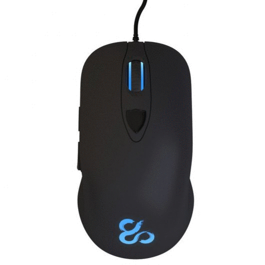
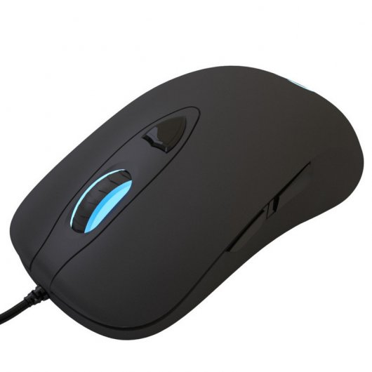
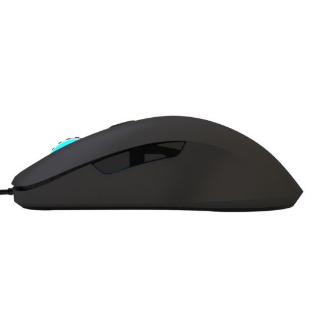
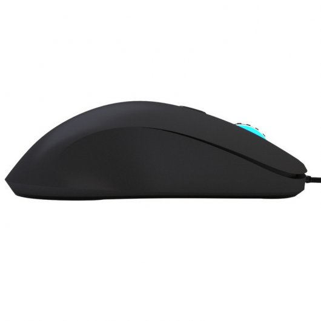
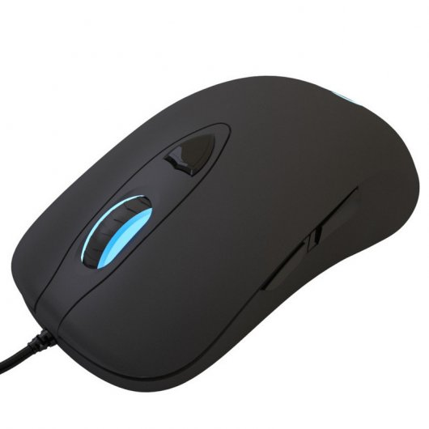
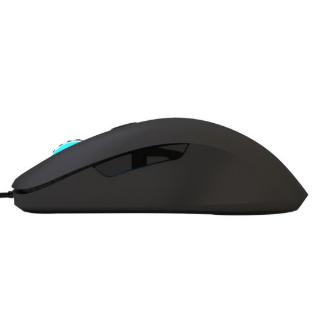
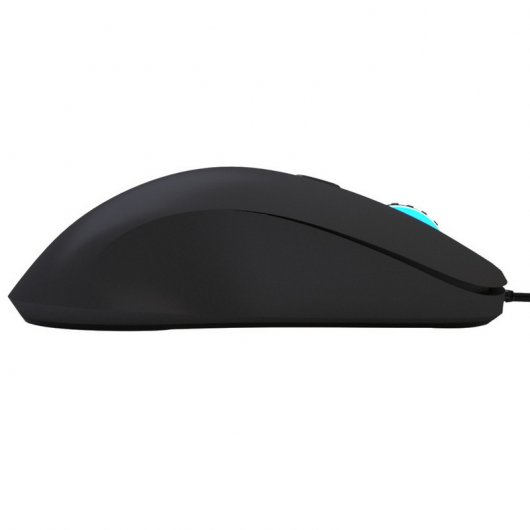

FUTURETECH STORE |

 





|
Newskill Renshi Laser
29,99€
Te presentamos en PcComponentes lo último en periféricos Gaming de mano de la marca Newskill. Newskill nace gracias a la pasión por los e-sports, girando en todo momento en torno a la continua evolución y al perfeccionamiento de los usuarios, ya sean profesional o casual gamers. El objetivo de Newskill es proveer a los jugadores de los mejores productos de la escena gaming así como proporcionar el mejor soporte y experiencia de uso a cada uno de ellos. Bienvenidos jugadores!!!!
Características
Ergonomic Láser Gaming Mouse Simpleza, precisión, maestría. “RENSHI” es un ratón gaming especializado en shooters totalmente ergonómico con un diseño sobrio, discreto y pulido, diseñado especialmente para el Gaming Profesional. “RENSHI” nace de la experiencia y la tradición, pero se desarrolló con cualidades dignas de los mejores jugadores. Su textura de goma para un mejor agarre, su diseño totalmente ergonómico y su preciso sensor láser AVAGO 9800 de hasta 8200 DPI configurables hacen, de él, un arma infalible.
Diseñado con el principio de ingeniería biomecánica para la mano derecha Al apoyar la mano por primera vez sobre “RENSHI” sentirás cómo sus simples pero estilizadas curvas se acoplan perfectamente entre tus dedos, así como su tacto de goma te proporciona la sensación de firmeza y seguridad buscada en un arma precisa. Aun así, su verdadero potencial lo demostrará cuando te encuentres en una feroz batalla tras una larga sesión de juego y sientas tus dedos tan preparados y descansados como en la primera ronda. Sentirás su comodidad, fortaleza y habilidad operacional; lo sentirás totalmente invencible.
Haz click en el sentido de la excelencia 6 botones configurables mediante software avalados por la calidad de los interruptores OMRON: 5 millones de pulsaciones, respuesta instantánea y sensación extrema. Un diseño en concha protege y estiliza este conjunto del que destacamos el sensor AVAGO 9800 y los pies ultradeslizantes de teflón; conjunto que nos proporciona el máximo control, precisión y velocidad, además de la comodidad necesaria para aguantar largas sesiones de juego.
Iluminación Motiva tu lucha, define tu ambiente. “RENSHI” dispone de 16.8 millones de colores seleccionables mediante software para que el jugador configure el tipo de iluminación que más le identifique a cada momento. Diferentes tipos de efectos. -Iluminación estática. -Efecto respiración. -Sin iluminación.
Software Dedicado “RENSHI” está respaldado por un software propio de configuración y personalización avanzada. Este software permite la modificación de parámetros como la frecuencia de rastreo, iluminación, sensibilidad, aceleración, grabado de macros, etc
Cable trenzado para una mayor durabilidad y conector USB dorado. Cable de fibra trenzado de alta resistencia de 1.8 metros y conector USB 2.0 bañado en oro que proporciona una transferencia de datos rápida y estable.
AVAGO 9800, EL CHIP LÁSER DE LOS JUGADORES PROFESIONALES RENSHI dispone del chip AVAGO 9800 ultra preciso. Aceleración de hasta 30G, velocidad de procesado de imágenes de hasta 12000FPS, velocidad de desplazamiento de 381 cm por segundo y 8200 DPI de alta precisión con cuatro regulaciones independientes 1000/2000/4000/8200.
Especificaciones
Sensor AVAGO 9800 láser gaming
Resolución 8200 DPI
Mecánica 6 botones
Tipo de juego FPS/MMORPG/MOBA/RTS
Polling Rate 1000Hz/1ms
Mousefeet Pads de teflón
Cable 1.8m de fibra trenzada
Interruptores OMRON Gaming
Frecuencia de lectura 12000 FPS
Velocidad máx. 150 IPS
Aceleración máxima 30G
Interfaz USB 2.0 bañado en oro
Dimensiones y Peso
Dimensiones 126 x 68 x 39mm
Peso 130 ± 10g
Compatible con: Windows 2000/XP/me/Vista/Win7/Win8/Win10
Contenido del paquete
Ratón “RENSHI”.
Mousefeet de recambio.
Póster.
Colgador de puerta.
Tarjeta informativa.
Pegatina newskill.
Tarjeta exclusiva “VIP TEAM” de newskill con colgante.
Bolsa de transporte.
|


{kind=link}
{kind=link}
{kind=link}